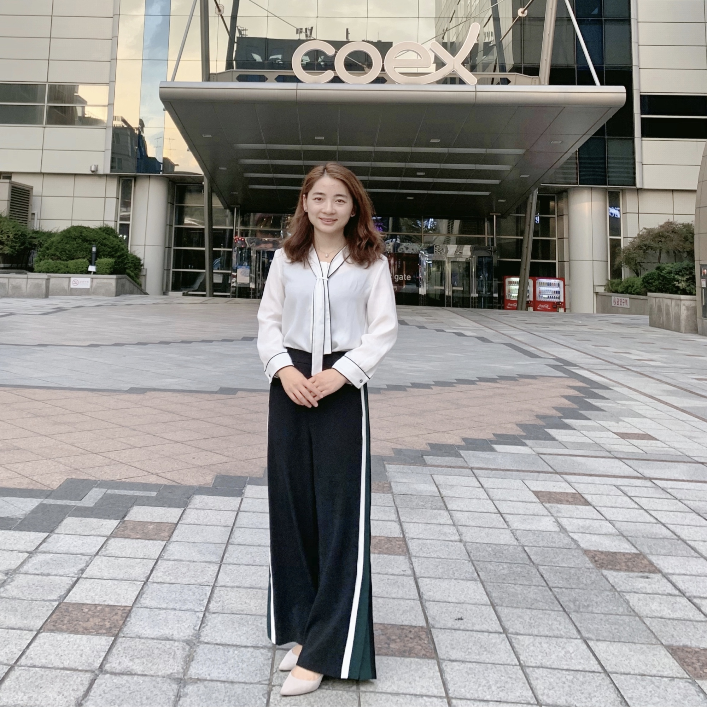
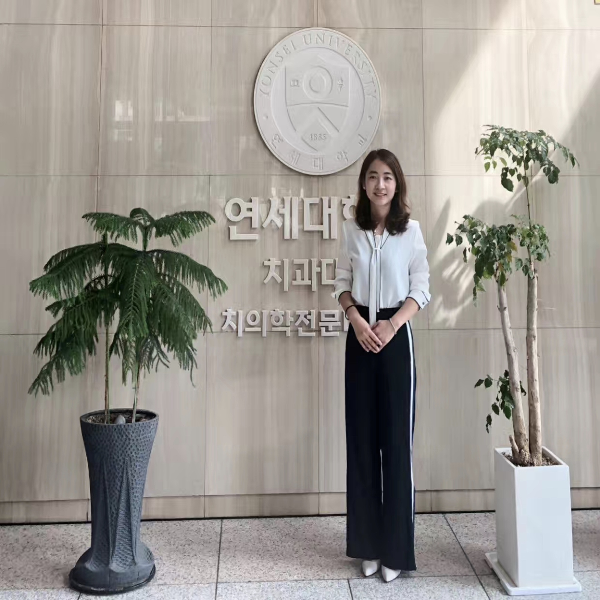
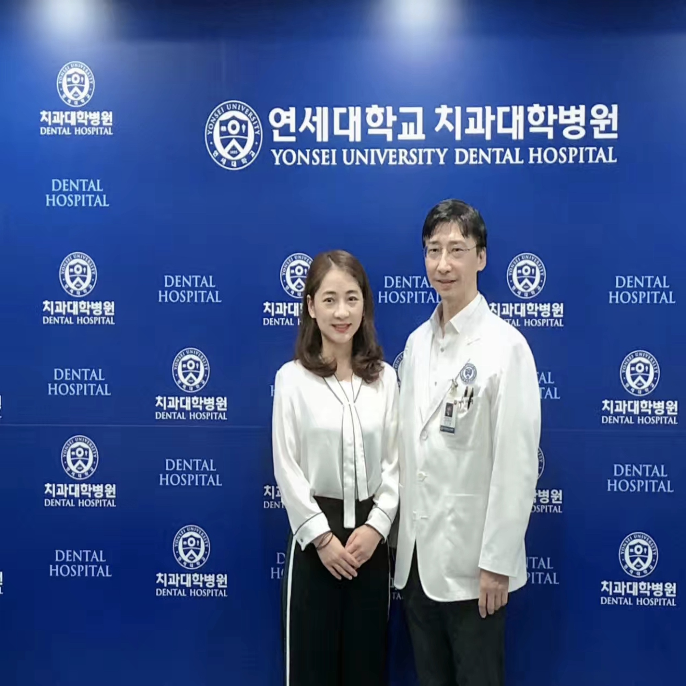

Najun Niu (牛娜君)
I am an orthodontist and graduated from Chongqing Medical University. I have been working in orthodontics for more than 5 years.
Now, I am the leader of the orthodontic group in Qimei Correction.
我是一名牙医，毕业于重庆医科大学。我从事口腔正畸工作已经五年多了。我现在就职于齐美矫正，并担任该诊所的口腔正畸组组长。
这些年，我一直奋斗在口腔正畸一线，经手过许多病人。本网站为我的个人主页，主要用于记录这些年来我的职业经历以及分享我多年来的临床矫正经验。
教育经历
2008.09--2013.07 重庆医科大学 口腔医学 五年制
实习经历
2011.07--2011.09 重庆建设医院（二甲）进行普内及普外实习。
2011.09--2011.10 重庆医科大学附属第一医院（三甲）进行耳鼻咽喉科实习。
2012.04--2012.06 重庆医科大学附属口腔医院（三甲）进行牙体牙髓科见习。
2012.07--2013.07 重庆医科大学附属口腔医院（三甲）进行口腔内科，口腔修复科，口腔外科及放射科等科室的实习。
2013.08--2013.12 淄博市妇幼保健院。
最新消息
我获得了口腔主治医师证书。
我于2019年成为了中华口腔医学会口腔正畸专业委员会专科会员。
我与2019年成为了中华口腔医学会会员。
我获得了执业医师执业证书。
我获得了医师资格证证书。
我获得了普通话二级甲等证书。
我获得了英语四级证书。
我获得了计算机二级证书。
社会活动
我于2019年10月前往韩国首尔参加了韩国正畸年会，并前往韩国延世大学正畸科、延世麗友齿科医院（연세 여우 치과）和埃斯普兰牙科医院（에스플란트치과병원）做参观交流。


